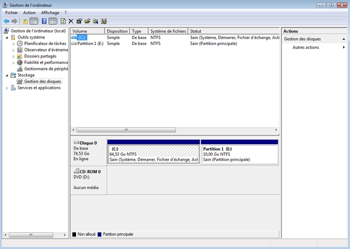

Avant de partitionner, il faut savoir un paquet de choses.
Qu'est-ce que le partitionnement ?
L'intérêt et les risques du partitionnement.
Ce qu'il faut faire avant le partitionnement.
Qu'est-ce que le partitionnement ?
Partitionner, c'est diviser un disque dur en plusieurs autres petits disques que l'on appelle "partitions".
C'est-à-dire que l'on peut avoir une 1 partition étendue + 3 partitions primaires et que dans la partition étendue, on peut créer une infinité de partitions logiques.
Partition primaire : c'est une partition qui peut contenir la partition d'amorçage d'un système d'exploitation (Windows, Linux, Mac, etc.). Partition étendue : c'est une partition primaire spéciale qui va contenir des lecteurs logiques. Partition logique : une simple partition qui se trouve dans une partition étendue. Lecteur logique : synonyme de partition logique.
Voici un exemple de disque dur :
Vue de l'intérieur d'un disque dur de 2,5 pouces
Le voici maintenant représenté schématiquement :
Votre disque dur d'origine
Et normalement, à la fin de ce tutoriel, il devra ressembler à ce schéma :
Votre disque dur avec une partition
L'intérêt et les risques du partitionnement
Le partitionnement a plusieurs intérêts :
garder des fichiers en sécurité ;
avoir plusieurs systèmes d'exploitation sur un même disque dur ;
tout simplement avoir deux disques durs pour partager un ordinateur entre 2 personnes ;
et tout ce que vous voudrez d'autre. :p
Voilà peut-être les raisons pour lesquelles vous lisez ce tutoriel, ou sinon je vous ai donné des idées. :p
Il faut aussi savoir qu'il y a des risques lorsqu'on fait un partitionnement, c'est-à-dire que si cette action est mal faite :-° , elle peut définitivement endommager votre disque dur. Je vous recommande donc très vivement de bien suivre les cours, surtout la partie "Avant de commencer à partitionner" qui vous donne normalement une sécurité optimale. ;)
Avant de commencer à partitionner
Avant de commencer à partitionner, il faut faire les actions suivantes, très vivement recommandées :
enregistrer ses fichiers importants ;
défragmenter son disque dur.
Je vous recommande d'enregistrer vos fichiers importants si vous voulez vraiment avoir une sécurité optimale ; normalement, la défragmentation suffit amplement. ;)
Comment fait-on pour défragmenter un disque dur ? o_O
Tout d'abord, il faut aller dans : Menu démarrer > Tous les programmes > Accessoires > Outils système > Défragmenteur de disque. Dès que vous cliquez sur le défragmenteur, vous verrez qu'il n'est pas détaillé comme sous XP : c'est entièrement normal. Si vous voulez les détails, utilisez un défragmenteur alternatif. Vous verrez alors une fenêtre comme celle-ci et vous cliquerez sur Défragmenter maintenant :
Après avoir cliqué, le défragmenteur va se lancer et la défragmentation de votre disque dur va commencer.
Maintenant, votre disque dur est prêt pour le partitionnement. C'est parti ! :pirate:
Pour partitionner son disque dur sous Vista, il faut aller dans : Panneau de configuration > Outils d'administration > Gestion de l'ordinateur > Stockage > Gestion des disques (local).
Ensuite, vous tomberez sur une fenêtre semblable à celle-ci :
Pour réduire le volume, il faut faire un clic-droit sur votre disque dur et sélectionner Réduire le volume :
Lorsque vous aurez sélectionné Réduire le volume, une fenêtre apparaîtra et vous pourrez choisir la taille de votre partition. La taille de votre partition se fait en mégaoctets (Mo) ; donc, si vous voulez une partition de 10 Go, sachant que 1024 Mo = 1 Go, il faut faire 1024 * 10, soit 10 240 Mo.
Ensuite, vous cliquez sur le bouton Réduire et vous avez maintenant 10 Go non alloués :
Voilà maintenant à quoi ressemble votre disque dur :
Mais ce n'est pas fini : maintenant, il faut transformer cet espace de 10 Go en une partition.
Pour créer une partition, il faut faire un clic-droit sur l'espace de 10 Go non alloués et cliquer sur Nouveau volume simple :
Après, une fenêtre comme celle-ci apparaîtra, et vous cliquerez sur Suivant :
Ensuite, vous choisirez la taille de la partition, toujours en mégaoctets (Mo).
Cliquez sur Suivant et vous tomberez sur une fenêtre qui vous demandera d'attribuer une lettre ou un chemin d'accès au lecteur. Je vous recommande d'utiliser une lettre, cela sera plus simple ; par exemple, nous allons choisir la lettre E: (mais vous pouvez choisir n'importe quelle lettre de l'alphabet ;) ), et cliquez sur Suivant :
Après, une fenêtre s'affichera et vous demandera de formater le volume.
Il faut cocher Formater ce volume avec les paramètres suivants :, choisir le système de fichiers NTFS et mettre la taille d'unité d'allocation à Par défaut. Ensuite, vous choisissez un nom à la partition ; nous allons l'appeler Partition 1 et pour finir, nous allons cocher la case Effectuer un formatage rapide (pour que cela soit plus rapide ^^ ) :
Cliquez sur Suivant. Vous aurez dans la fenêtre un récapitulatif de tout ce qu'on a choisi ; vous pourrez le relire si vous craignez d'avoir fait une petite erreur :-° et pour terminer la partition, cliquez sur Terminer :
Maintenant que vous avez appuyé sur Terminer, le formatage de la partition démarre : cela peut prendre une minute pour qu'il se termine, et après vous verrez que les 10 Go non alloués se sont transformés en une partition de 10 Go. En allant sur Menu démarrer > Ordinateur, vous pourrez voir votre partition :
Voilà : dès maintenant, vous pouvez mettre des fichiers et des documents dans votre partition, c'est comme un second disque dur mais virtuel. Bravo ! Vous savez partitionner un disque dur ! :p
Si vous voulez supprimer la partition et donc revenir à votre disque dur d'origine avec son espace d'origine, il faut retourner sur : Panneau de configuration > Outils d'administration > Gestion de l'ordinateur > Stockage > Gestion des disques (local). Vous trouverez une fenêtre semblable à celle-ci :

Pour supprimer la partition, faites un clic-droit sur la partition et cliquez sur Supprimer le volume.
Vous verrez que la partition de 10 Go n'est plus une partition mais un espace de 10 Go non alloués : :p
Ensuite, pour transférer les 10 Go non alloués sur votre disque dur, il faut faire un clic-droit sur le disque dur et cliquer sur Étendre le volume :
Après avoir cliqué sur Étendre le volume, sélectionnez Suivant :
Ensuite, vous tombez sur une fenêtre qui vous demande de sélectionner les disques que l'on veut rajouter au disque dur et aussi la taille que l'on veut mettre :
Après, cliquez sur Suivant, puis sur Terminer. À la fin, vous obtenez votre disque dur avec sa taille d'origine :
Voilà, vous savez supprimer une partition et revenir à la taille d'origine d'un disque dur. Bravo ! :p
Merci d'avoir suivi mon tutoriel : j'espère qu'il vous a plu et aidé. :)
Si vous avez des questions, merci de me contacter par MP.
Je voudrais remercier les zCorrecteurs pour le travail qu'ils ont fourni et MyGB pour ses images.